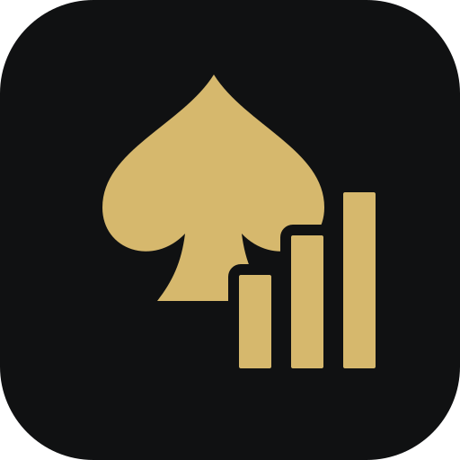

JSONバックアップ
固有ID・店舗名・大会名を含む全戦績を保存します。

RECORD YOUR GAME
この端末に保存されます。定期的にバックアップを。
YOUR POKER JOURNEY
KEEP YOUR RECORDS SAFE
固有ID・店舗名・大会名を含む全戦績を保存します。
専用JSONを選び、内容を確認して追加します。同じID・同じ戦績は重複追加しません。
Safariとホーム画面のアプリでデータが別になる場合があります。JSONで引き継いでください。ブラウザのデータ消去で戦績も消えるため、外部バックアップを保管してください。
Googleシート自動同期はv0.2で対応予定。